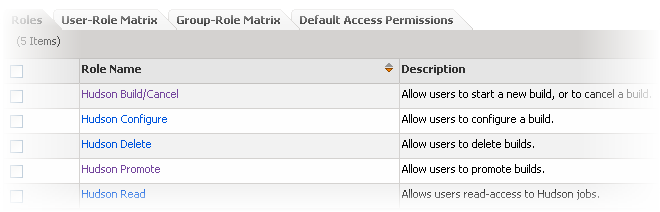

Created by Unknown User (dharmsheta), last modified on Mar 05, 2012
General instructions on how to setup Authentication/Authorization
Authenticate users in Jenkins
Enable security on your Jenkins site to authenticate users against a CollabNet SourceForge Enterprise or CollabNet Teamforge server.
- In your Jenkins installation, go to Manage Jenkins> Configure System > Jenkins.
- Select Enable Security.# In the Access Control section, select CollabNet Security Realm to authenticate usernames and passwords.
- Enter the URL for your SourceForge or Teamforge site. For example, https://forge.collab.net.
- Click Save.
Authorize users at the site level
At the site level, you can assign administration or read-only permissions to Teamforge users and groups.
- Make sure that the Authentication and Authorization plugin is installed and you've enabled CollabNet security.
- In your Jenkins installation, go to Manage Jenkins> Configure System > Jenkins.
- Select CollabNet Authorization to specify what Teamforge users or groups can do on the site.
- Enter a comma-separated list of users or groups to whom you want to grant administer privileges.
- Note: A Teamforge site administrator is automatically assigned administer privileges in Jenkins.
- Specify the Teamforge users or groups to whom you want to grant read-only privileges.
- Note: To grant users permissions within individual projects, see these instructions.
- Click Save.
Authorize users at the project level
Assign Teamforge users default permissions for a Jenkins project, or set up user roles for that project in Teamforge.
Note: While configuring project-level access, you associate one Teamforge project to one Jenkins project
- In the Jenkins project, click Configure.
- In the Authorization from CollabNet section, enter the name of the Teamforge project. This project is used to determine what its members can do in the Jenkins project.
- To automatically set up Jenkins -related roles in the Teamforge project, select Create Jenkins roles on CollabNet server in this project.
- Here's an example of the roles.

-
- Once the roles are available in Teamforge, the project administrator must assign them to project members to specify the things they can do in the Jenkins project.
- To give project administrators full permissions in the project, and all members read permission, select Grant default permissions to members of the project.
- Note: To be able to do this, you must be the Teamforge project administrator
- Click Save.
Assign project-level Jenkins roles in Teamforge
As a Teamforge project administrator, assign roles to individual users and groups for the associated Jenkins job.
Jenkins -related roles are automatically created in a Teamforge project when the Create Hudson roles on CollabNet server in this project option is selected in Jenkins.
- In the Teamforge project, click Project Admin in the project navigation bar.
- On the Project Admin menu, click Permissions.
- To assign roles to a project member, click the User-Role Matrix tab.
- To assign roles to a group, click the Group-Role Matrix tab.The role matrix lists all project members or groups on the left and all available roles on the top.
- Select the appropriate roles.# Click Save.The roles are now assigned to the project member or group.
- Click Save.
Setup for the Authentication and Authorization components starts on the main Jenkins configuration page.
{kind=link}